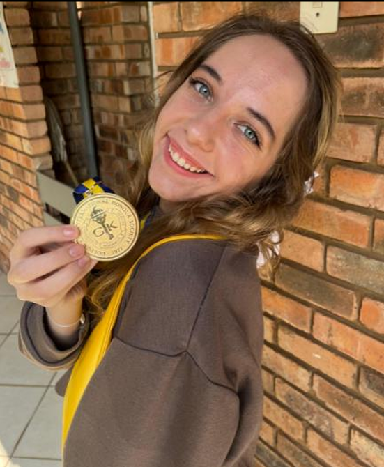

Jennifer Ann Kok
// Aspiring Deep Learning Engineer · Building Intelligent Systems
About Me
Born and raised on a farm in the Free State, I grew up with a deep curiosity about the world — one that has never stopped growing. I am a final year B.Sc. Data Science student at Eduvos, balancing a full-time on-campus degree with work every morning from 7:30am, and still maintaining an 83% average with distinction-level results across the majority of my modules. I believe that dedication matters more than circumstance, and my academic record reflects that.
My faith as a Christian is the foundation of everything I do — it shapes my values, my compassion, and my drive to make a meaningful difference in the world. I thrive when I am busy. Idle time is not something I am comfortable with — I would rather be learning something, building something, or helping someone. Work is not a burden to me; it is where I come alive.
My passions sit at the intersection of mathematics, neuroscience, and artificial intelligence. I am fascinated by the human brain — not just as a biological system, but as the ultimate blueprint for intelligent machines. My long-term goal is to become a deep learning engineer who understands the brain well enough to meaningfully replicate its intelligence in AI systems. I aim to pursue a neuroscience degree alongside my occupation as a Data Scientist to make that vision a reality.
I am a lifelong learner in every sense — currently studying French, Dutch, and Russian, constantly working through courses beyond my degree, and always looking for the next challenge. I love animals deeply, and one day I hope to open a homeless shelter and give back to those who need it most. Family keeps me grounded: I have two little sisters and a brother who remind me every day why I work as hard as I do.
I do not just study data science — I live it, build with it, and push it further every single day.
Technical Skills
Python
R
SQL
C++
HTML
Bash
Pandas & NumPy
Data Cleaning
Feature Engineering
EDA
Data Visualization
Scikit-Learn
Regression & Classification
Model Evaluation
Neural Networks
Basic Cognitive Neuroscience
Microsoft Office Suite
Excel – Advanced Formulas, Pivot Tables
Command Prompt / Powershell
Git & GitHub
Linux
VS Code / Jupyter Notebook / R Studio
Llama 2
Cisco Packet Tracer
Linear Algebra
Mathematical Modeling in Python
Calculus 1,2,3
Numerical Analysis
Statistical Inference
Quantitative Methods & Problem Solving
Quantum Mechanics Basics
Projects
- Pay Calculator – A web-based tool to calculate my commission-based pay at work daily. Open Calculator
- Degree Predictor – AI model that predicts in which tertiary field a student would perform best based on high-school grades.
Education
B.Sc. / Data Science
Eduvos | South Africa
Currently pursuing a Bachelor of Science in Data Science, focusing on applied Artificial Intelligence and Machine Learning. Developed practical skills in Python, R, SQL, and data visualization while applying statistical and mathematical concepts to solve real-world problems. Projects include predictive modeling, neural networks, and deep learning applications.
B.Sc. Actuarial & Financial Mathematics
University of Pretoria (Tuks) | Pretoria, South Africa | 2023
Admitted to one of South Africa's most competitive quantitative programs, I completed the first year with advanced coursework in probability, statistics, and financial mathematics. This provided a strong analytical foundation. I then transitioned to Data Science to pursue my passion for Artificial Intelligence and Machine Learning.
Academic Record
View my official academic record below or download the full PDF.
⬇ Download Academic RecordContact
Email: jk018885@gmail.com
GitHub: github.com/CodingBoo314159
LinkedIn: linkedin.com/in/jennifer-kok-933125264
Cell: +27 768517303